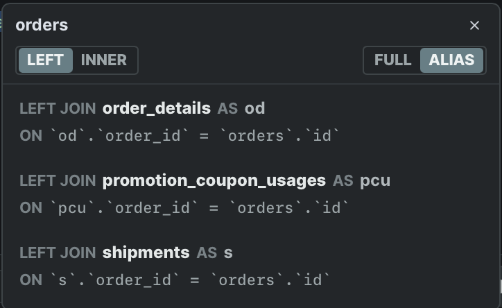
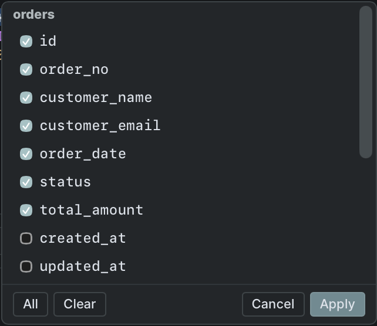
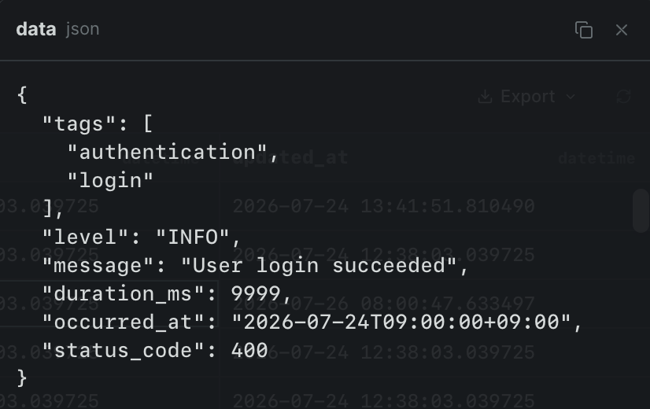
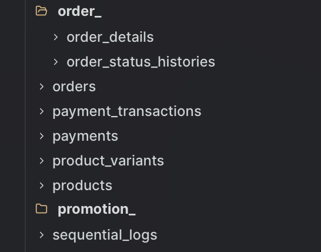

マウス操作でJOIN
テーブル名をダブルクリックして候補を選択。結合条件付きのJOIN句をSQLへ追加。

Desktop SQL client
TatamiSQLはシンプルな操作で使えるSQLクライアントです。
α版 / MySQL・PostgreSQL対応
操作デモ
CORE FEATURES
テーブル名をダブルクリックして候補を選択。結合条件付きのJOIN句をSQLへ追加。

SELECT * の「*」をダブルクリック。必要なカラムを選ぶと、SELECT句へ反映。

セルをダブルクリックすると内容を大きく表示。長文やJSONも見やすく確認。

共通する名前ごとにテーブルをまとめて表示。テーブルが多い環境でも探しやすく。
